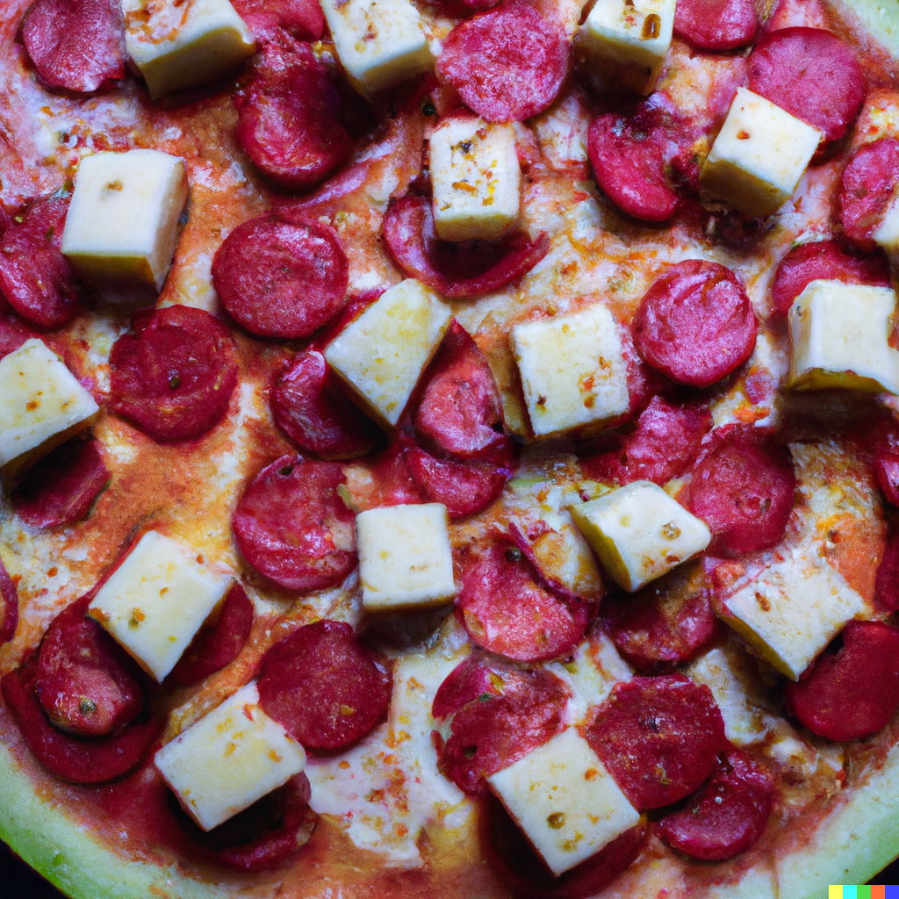

Pickled Watermelon Pizza

Description
A twist on the classic pizza, this unconventional dish features
a pickled watermelon base topped with a variety of savory
ingredients such as feta cheese, prosciutto, and arugula,
offering a refreshing and unexpected flavor combination.
Ingredients
- 1 small seedless watermelon
- 1/2 cup white vinegar
- 1/4 cup granulated sugar
- 1 teaspoon salt
- 1/2 teaspoon whole black peppercorns
- 1/2 teaspoon red pepper flakes
- 1/4 cup crumbled feta cheese
- 2 slices prosciutto, torn into pieces
- 1 cup arugula
- Balsamic glaze, for drizzling (optional)
- Olive oil, for drizzling
- Salt and pepper to taste
Steps
- Slice the watermelon into rounds, about 1/2 inch thick.
Use a cookie cutter or knife to cut the rounds into
smaller, individual pizza-sized rounds.
- In a small saucepan, combine the white vinegar, granulated
sugar, salt, whole black peppercorns, and red pepper flakes.
Heat the mixture over medium heat, stirring occasionally,
until the sugar and salt are dissolved. Remove from heat and
let the pickling liquid cool slightly.
- Place the watermelon rounds in a shallow dish or container
and pour the pickling liquid over them, ensuring they are
fully submerged. Cover and refrigerate for at least 1 hour
to allow the watermelon to pickle.
- Preheat your oven to 400°F (200°C). Place the pickled
watermelon rounds on a baking sheet lined with parchment
paper.
- Bake the pickled watermelon rounds in the preheated oven
for 5-7 minutes, just until slightly softened.
- Remove the watermelon rounds from the oven and let them
cool slightly.
- To assemble the pizza, top each pickled watermelon round
with crumbled feta cheese, torn pieces of prosciutto, and
a handful of arugula.
- Drizzle the pizzas with balsamic glaze and olive oil,
and season with salt and pepper to taste.
- Serve immediately and enjoy this unconventional and
refreshing twist on pizza!
- Optionally, you can experiment with additional toppings
such as thinly sliced red onion, fresh basil leaves, or
a sprinkle of crushed red pepper flakes for added flavor
and complexity.
- Serve your pickled watermelon pizzas as appetizers, snacks,
or even as a unique main dish at your next gathering. Enjoy
the surprising blend of flavors and textures!